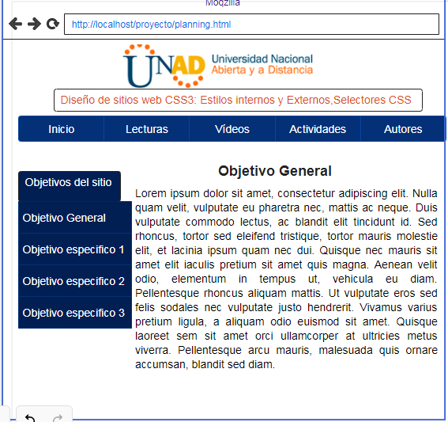

Para la actividad se presentaran los siguientes materiles:
Explicacion estilos internos y Externos CSS: CSS Interno y Externo
Video interactivo estilos internos y Externos CSS: Video CSS Interno y Externo explicacion basica
Juego para aprender selectores CSS: Juego selectores CSS
Herramienta utilizada para el desarrollo de la pagina web: Instalador Sublime Text 3
Contenido:
Formas de aplicar CSS: Interno y externo
Existen estilos por defecto que aplican automáticamente los navegadores web cuando no hay estilos especificados, así como que podemos embeber código CSS en las propias etiquetas de HTML, “en línea”. Vamos a ver ahora dos formas adicionales de aplicar estilos CSS: en la parte inicial del documento HTML (aplicación de estilos interna o CSS interno) o en un archivo de extensión .css independiente del archivo HTML (aplicación de estilos externa o CSS externo).
CSS INTERNO:
Las diferentes propiedades y valores se pueden poner en una misma línea o en distintas líneas según se prefiera (siempre separados mediante punto y coma).
Dentro de las etiquetas head incluiremos una etiqueta de apertura de declaración de estilos style type=”text/css”, a continuación colocaremos la definición de tantos estilos como deseemos y cerraremos la declaración con /style'. En HTML 5 no es necesario especificar type =”text/css” pero de momento seguimos recomendando que se use esta sintaxis.
CSS EXTERNO:
Aunque el CSS interno nos permite unificar en una declaración todos los estilos para un archivo html, seguimos teniendo el problema de tener que repetir la definición de estilos en la cabecera de cada uno de los archivos html de nuestro desarrollo web. Si el desarrollo tiene pocos archivos quizás sea menos problemático, pero cuando el desarrollo tiene cientos o miles de archivos sí se convierte en un verdadero problema, ya que cada vez que introdujéramos cambios habría que hacerlo en los cientos o miles de archivos de que constara el desarrollo.
Mockup:
La siguiente imagen nos describe el diseño de la pagina principal que se presentara ante el cliente.
